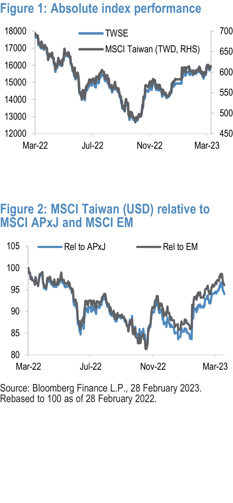

Taiwan Monthly Wrap
March 2023: Resilient amid macro concerns
•
Key market drivers: The TWSE index (TWD) gained 2.3% in March.
MSCI Taiwan (US$) rose 2.8%, performing in-line with regional indexes MSCI EM (+2.7%) and MSCI Asia Pacific ex-Japan (+2.5%). Taiwan equities rallied amidst a number of news items, such as the regional banking crisis in the US, increased curbs on semiconductor equipment exports to China, Kevin McCarthy postponing his visit to 2024, and a surprise rate hike from the Taiwan central bank. China speeding up on reopening and ebbing concerns on DM banking crisis helped the recovery. The TWD was flattish (+0.1%) in March. MSCI Taiwan 2023/24 EPS forecasts saw downward revisions of 2.7%/2.0%. MSCI Taiwan 12m fwd P/E stayed flattish at 14.2x (14.3x last month).
•
Sector performance highlights: Consumer Staples, Telecoms and IT sectors outperformed the broader MSCI Taiwan Index while Financials, Materials and Industrials underperformed the most. The Tech sector was back in favor as US treasury yields retreated from February highs. Logic semis posted a decent performance (ASE:+6%, UMC:+6%, Novatek:+6%, VIS:+5%, TSMC:+4%) amid seemingly firm pricing data (blended ASP up 21% yoy in January). We expect Logic semis outperformance to continue , driven by expectations of a 2H23 demand recovery. Other semis related to China demand recovery also outperformed: Mediatek:+9%, Win Semi:+7% as China tech demand is likely to see a sequential improvement in 2Q23. In non-tech, underperformance of Financials was driven by disappointing 4Q earnings that came in below expectations across most companies, due mainly to enlarged COVID related provisions, heightened hedging costs, and adverse NIM migration.
•
Foreign equity fund flows: FINI inflows into Taiwan equities was almost flat in March (+U$57mn) from +U$1.8bn in February (YTD: +U$7.9bn). Tech saw fairly strong inflows (+U$2.3bn) while all others saw outflows (Industrials: -U$872mn, Financials: -U$730mn).
•
Key Economic events: 1) March manufacturing PMI eased modestly to 48.6 2) Central bank delivers a surprise 12.5bp hike despite growth headwinds 3) February IP fell 8.7%oya, with notable tech sector weakness; inventory may be peaking off 4) February export orders report showed signs of sequential improvement, led by DM demand 5) February CPI inflation eased to 2.43%oya post-LNY; central bank may stay on hold amid growth concerns 6) February exports disappointed, falling 17.1%oya, with drag from the tech sector.
Ranked MSCI Taiwan sector returns (US$) Top and bottom five J.P. Morgan universe stocks
One Month % Three months % One Month % Three months %
C Staples 5.0 IT 19.2 Wistron Corp 26.2 AP Memory Technology Corp 96.4
Communication S 4.8 Taiwan 14.5 Sunonwealth Electric Machine I 20.7 ASMedia Technology Inc 70.9
IT 4.7 Communication S 8.1 Inventec Corp 20.1 ASPEED Technology Inc 56.4
Taiwan 2.8 Energy 6.7 Wiwynn Corp 16.1 Wistron Corp 42.3
C Discretionary 2.0 Materials 6.0 ASMedia Technology Inc 15.5 Wiwynn Corp 41.2
Energy 0.1 C Staples 5.9 Silergy Corp (17.6) Makalot Industrial Co Ltd (7.3)
Industrials (0.9) Industrials 4.5 Advanced Energy Solution Holdi (12.8) Feng TAY Enterprise Co Ltd (6.5)
Materials (1.0) C Discretionary 4.4 Fusheng Precision Co Ltd (8.7) Shin Kong Financial Holding Co (4.0)
Financials (2.2) Financials 3.3 Taiwan Cement Corp (7.0) Evergreen Marine Corp Taiwan L (2.8)
Fubon Financial Holding Co Ltd (5.8) Formosa Chemicals & Fibre Corp (2.0)
Figure 1: Absolute index performance
Figure 2: MSCI Taiwan (USD) relative to
====================================================================================================
Equity review
The TWSE index (TWD) gained 2.3% in March. MSCI Taiwan (US$) rose 2.8%, performing in-line with regional indexes MSCI EM (+2.7%) and MSCI Asia Pacific ex-Japan (+2.5%). Taiwan equities rallied amidst a number of news items, such as the regional banking crisis in the US, increased curbs on semiconductor equipment exports to China, Kevin McCarthy postponing his visit to 2024, and a surprise rate hike from the Taiwan central bank. China speeding up on reopening and ebbing concerns on DM banking crisis helped the recovery. The TWD was flattish (+0.1%) in March.
MSCI Taiwan 2023/24 EPS forecasts saw downward revi- sions of 2.7%/2.0%. The MSCI Taiwan 12m fwd P/E multiple stayed flattish at 14.2x (from 14.3x last month), trading slightly above the post-GFC average.
Sector performance
Consumer Staples, Telecoms and IT sectors outperformed the broader MSCI Taiwan Index while Financials, Materials, and Industrials underperformed the most.
The Tech sector was back in favor as US treasury yields retreated from February highs. Logic semis posted a decent performance (ASE:+6%, UMC:+6%, Novatek:+6%, VIS:+5%, TSMC:+4%) amid seemingly firm pricing data (blended ASP up 21% yoy in January). We expect Logic semis outperformance to continue driven by expectations of a 2H23 demand recovery and investor positioning into an 2024 industry upturn. For TSMC, we expect a strong ramp-up in 2H23 for N3, continuing into 2024 as more customers come on-board. Other semis related to China demand recovery also outperformed: Mediatek:+9%, Win Semi:+7% as China tech demand is likely to see a sequential improvement in 2Q23 as inventory clears up, restocking picks up momentum and demand normalizes after China’s re-opening. PC supply chain have seen some positive data points in the last two months, such as better-than-feared 1Q NB ODM build and restocking PC IC orders. While PC end demand remains soft, Notebook channel inventory has come down close to normal levels. In PC stocks, the best performers were ASMedia (+16%), Quan- ta (+11%), and MicroStar (+5%). We upgraded MicroStar to OW as we think the YoY earnings momentum has bottomed from 4Q22 with demand recovery of motherboard and VGA.
In non-tech, underperformance of Financials was driven by disappointing 4Q earnings that came in below expectations across most companies, due mainly to enlarged COVID relat- ed provisions, heightened hedging costs, and adverse NIM migration. In Industrials, Evergreen Marine had a lukewarm
Taiwan Monthly Wrap
also declared a generous dividend payout despite the elevated capex schedule ahead.
Equity fund flows and turnover
FINI inflows into Taiwan equities were almost flat in March (+U$57mn) from +U$1.8bn in February (YTD: +U$7.9bn). Tech saw fairly strong inflows (+U$2.3bn) while all others saw outflows (Industrials: -U$872mn, Financials: -U$730mn). Domestic investor inflows accelerated to +U$1.4bn in March with the highest subscriptions in Tech (+U$977mn). EM equity funds recorded U$3.8bn of inflows in March. Average daily turnover was NT$313bn (+5% m/m, -21% y/y).
Figure 3: Trend in EPS forecasts
Figure 4: Forward P/E vs average (ex-GFC period)
Figure 5: FINI outflows continue, albeit narrower
====================================================================================================
Economic review
March manufacturing PMI eased modestly to 48.6 ( Grace Ng, ): Taiwan’s manufacturing PMI had tracked a significant downward trend since early 2022, though the lat- est readings seem to suggest encouraging signs of potential improvement going ahead. While the manufacturing PMI eased modestly by 0.4-pt to 48.6 in March, it followed a nota- ble rebound of 4.7-pt in February, and registered the second- highest reading in nine months. Looking at the latest trend, the March manufacturing PMI reading of 48.6 compares with the average 4Q22 reading of 42.6 and the average 3Q reading of 43.2.
Central bank delivers a surprise 12.5bp hike despite growth headwinds ( Grace Ng, 23 March 2023 ): In a somewhat sur- prising move, the Taiwan central bank has decided to raise the key policy rates by 12.5bp at today’s quarterly monetary poli- cy meeting, while J.P. Morgan and consensus expectations had looked for the central bank to stay on hold amid growth headwinds (recall that Taiwan’s real GDP contracted 0.4%oya in 4Q22, with Jan-Feb data hinting at further GDP contraction in 1Q23). Looking back, today’s 12.5bp hike is the fifth con- secutive rate hike by the Taiwan central bank since March last year (with accumulated hikes of 75bp). With the latest rate decision, the discount rate - the key policy rate in Taiwan - rose to 1.875%.
February IP fell 8.7%oya, with notable tech sector weakness; inventory may be peaking off ( Grace Ng, 23 March 2023 ): Taiwan’s February IP fell 8.7% over-year-ago (vs. -21.0%oya in January). The sequential trend in production activity appears to have remained weak: seasonally-adjusted, we esti- mate that average Jan-Feb IP fell 5.6% below the December level. Seasonally-adjusted, average Jan-Feb tech-related man- ufacturing IP fell 10.3%, below the December level. On the other hand, average Jan-Feb non-tech manufacturing IP rose 3.2%, sa, above December.
February export orders report showed signs of sequential improvement, led by DM demand ( Grace Ng, 20 March ): Taiwan’s latest export orders reports showed signs of sequential improvement, following significant weakening in 2H22. Export orders (in US$ terms) fell 18.3%oya in Febru- ary (vs -19.3%oya in January). Seasonally adjusted, we esti- mate that average Jan-Feb export orders recovered notably by 10.5% from December levels. Further breakdown shows average Jan-Feb tech orders rebounded 14.3% m/m sa from the December level. Non-tech demand also showed moderate recovery, as average Jan-Feb non-tech orders rose 3.1% sa from the December level.
February CPI inflation eased to 2.43%oya post-LNY; central bank may stay on hold amid growth concerns ( Grace Ng, 7 March 2023 ): Taiwan’s February CPI inflation came in below expectations, registering at 2.43%oya (J.P. Morgan: 2.6% consensus: 2.65%), compared to 3.05%oya in January (and the recent peak at 3.59%oya in June, which was a 14-year high). Our seasonal adjustment process shows headline CPI fell 0.5% m/m sa in February, following the rise of 0.8% m/m sa in January.
February exports disappointed, falling 17.1%oya, with drag from the tech sector (Grace Ng, 7 March 2023 ): Following the significant weakening trend in Taiwan’s external trade activi- ty through 2H22, export sector momentum seems to remain soft going into early 2023. Merchandise exports (in US$ terms) came in below expectations in February, falling 17.1% over-year-ago (J.P. Morgan and consensus: -12.5%), follow- ing the decline of 21.2% oya in January. Our seasonal adjust- ment process shows, smoothing out lunar new year-related volatility, Jan-Feb exports fell by average 4.4% m/m sa com- pared to the December level.
====================================================================================================